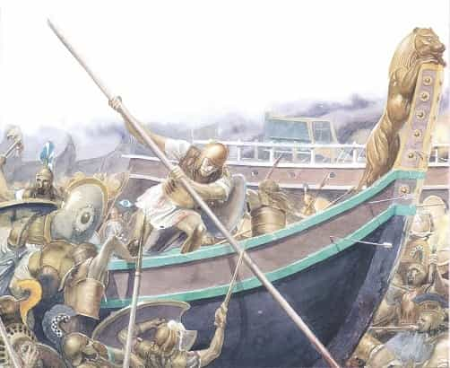

Libertas is a young bard traveling along the endless road to self-improvement and recounting his adventures. You can follow him on Twitter.


There are two ways to become a better writer: write more and read more. I first read the Odyssey at the age of 14 and The Iliad at 17. I return to them each year. Why have these two epic poems some 2,700 years old (with traditions stretching back even earlier, to the Bronze Age) lasted so long and proven so influential?
It’s not just their age. It isn’t even that the stories are so truthful to the human condition that they’re still relevant today. It’s that Homer (whoever he was) is a storyteller of nearly unsurpassed skill, a true master of language. But his language and writing style isn’t merely a beautiful thing to read, it’s something you can start using to become a more powerful and persuasive writer or speaker yourself.
Most famously, both the Iliad and Odyssey begin in media res (“in the middle of things”). The Iliad doesn’t begin with the Judgment of Paris and his elopement with Helen, but covers only a few weeks in the final year of the Trojan War. The Odyssey, meanwhile, begins not with the sack of Troy, but at the point Odysseus is about to return home, ten years later. This actually allows Homer to show us action first, and then fill in the missing details later, which the reader is probably wondering about.
Aside from skipping a slower build, a staple of most of modern fiction, beginning your message in media res actually takes advantage of a Pre-Suasive principle: that of “the unfinished.” This relates to the Zeigarnik effect which I spoke about a month or so ago, that people pay more attention to and remember things that aren’t complete.
In addition to allowing Homer to begin with memorable action, the device of in media res captivates attention because his audience wants to know what was the cause of this action (though in his own time the story was far more familiar on immediate recall than it is today). As you’re transfixed, he slowly solves the unanswered questions, partly with the Catalogue of Ships in book two of the Iliad, partly by the duel between Paris and Menelaus in book 3, and partly by the meeting of Achilles and Priam in book 24. In the Odyssey, books 9-12 tie up the loose ends. Yet, the main story of both epics is still unsolved even so, and he can smoothly move his audience’s attention back to the action at Troy or Odysseus’ homecoming.
If you have trouble building up your story or message, choosing to begin in media res at an opportune moment might save you some headaches.
Despite its fame, the Trojan Horse is never actually seen directly. It’s only described in passing in the Odyssey.
One of Homer’s most famous hallmarks is his use of simile, but there’s more to it than that. There is actually a particular hypnotic pattern that these similes often use. Unlimited Selling Power explains:
Ideosensory trance is another form of hypnosis we experience daily. It is based on our innate abilities to create in our minds visual images, feelings, voices, sounds, and even tastes and smells. When did you engage in ideosensory activities today? When you vividly experienced something that was not going on in “real time.” Some examples: When you imagined what you might have for lunch or dinner, when you imagined what you might do at home tonight, or when you imagined a sales call, or mentally rehearsed what you might say to someone else in the office today. Did you see the expression on his face? Could you hear his words and feel yourself reacting? You were in an ideosensory trance.
Very persuasive individuals can orchestrate vivid images that influence both the perception and mood of the listener. Highly-skilled salespeople use “word magic” to bring their prospects and customers to other worlds of sights and sounds and feelings.
This is what Homer does constantly:
Here Asius flogged his team and chariot hard, nor did he find the gates shut, the bolt shot home, not yet, the men still held them wide, hoping to save some comrade fleeing the onset, racing for the ships. Straight at the gates he lashed his team, hell-bent, his troops crowding behind him shouting war cries, never thinking the Argive line could still hold out – they’d all be hurled back on their blackened hulls. Idiots. There in the gates they found two men, a brace of two great fighters, lionhearted sons of the Lapith spearmen, one Pirithous’ offspring, rugged Polypoetes, the other Leonteus, a match for murderous Ares. Both warriors planted there before the towering gates rose like oaks that that rear their crests on a mountain ridge, standing up to the gales and driving rains, day in, day out, their giant roots branching, gripping deep in the earth: so these two, trusting all to their arms, their power, stood up to Asius’ headlong charge and never shrank. (Iliad 12.142-60)
Notice two other aspects of this that make the simile/trance even more powerful. The first is obviously the natural element involved. People have always respected and feared nature, which Robert Greene highlights in The 48 Laws of Power. You also know nature. It doesn’t need to be explained to you. The second element is the repeated use of action words (“standing,” “driving,” “branching,” “gripping”), which anchors the text and makes it more impactful (recall that more persuasive speakers use action words while less persuasive ones use passive words).
Here’s another of the same kind:
When the Trojans saw Ideomeneus fierce as fire, him and his aides-in-arms in handsome blazoned gear, they all cried out and charged them through the press and a sudden, pitched battle broke at the ships’ sterns. As gale winds swirl and shatter under the shrilling gusts on days when drifts of dust lie piled thick on the roads and winds whip up the dirt in a dense whirling cloud – so the battle broke, storming chaos, troops inflamed, slashing each other with bronze, carnage mounting, manslaughtering combat bristling with rangy spears, the honed lances brandished in hand and ripping flesh and the eyes dazzled now, blind with the glare of bronze, glittering helmets flashing, fighters plowing on in a mass. Only a veteran steeled at heart could watch that struggle and still thrill with joy and never feel the terror. (Iliad 13.384-99)
And how about when men actually go down?
Under his ear the son of Telamon stabbed with a heavy lance, wrenched the weapon out and down he went like a tall ash on a landmark mountain ridge that glistens far and wide – chopped down by an axe, its leaves running with sap, strewn across the earth…so Imbrius fell, the fine bronze armor clashing against him hard. (Iliad 13.211-16)
Finally, just to crystallize the point, I’ll leave with one of my favorite passages that centers on another sense – sound.
But over against them glorious Hector ranged his Trojans…and now they stretched the line of battle strangling tight, the blue-haired god of the sea and Hector fired in arms, he driving the Trojans, the god driving the Argives – and a wild surf pounded the ships and shelters, squadrons clashed with shattering war cries rising. Not so loud the breakers bellowing out against the shore, driven in from open sea by the North Wind’s brutal blast, not so loud the roar of fire whipped to a crackling blaze rampaging into a mountain gorge, raging up through timber, not so loud the gale that howls in the leafy crowns of oaks when it hits its pitch of fury tearing branches down – nothing so loud as cries of Trojans, cries of Achaeans, terrible war cries, armies storming against each other. (Iliad 14.461-74)
There’s no arguing with these passages, no parsing their meaning in your analytical mind. They hit your senses directly. With Homer, you see the glare of the bronze of clashing warriors burning bright as fire, you hear their cries as you hear the howling winds, and when men die, they go down like trees or bellowing bulls. The extraordinary is given an ordinary experience that you know. If you’re explaining, you’re losing in persuasive gravitas. Homer never explains. He also never uses passive language. When using his similes or not, his language is always direct and potent.

Understand: people mostly live in stories. Scott Adams likes to call it “different movies on the same screen.” Facts by themselves are mostly boring. They need to be centered on a narrative that’s moving. The best way you can sharpen your technique, whether you want to write a great story or simply craft a persuasive message, the machinery is usually the same. The best way to improve is to “write more and read more.” In this and many other areas in life, Homer still stands as a titan, 27 centuries later.
Read Next: 5 Things You Don’t Know About The Devices That Control Your Brain